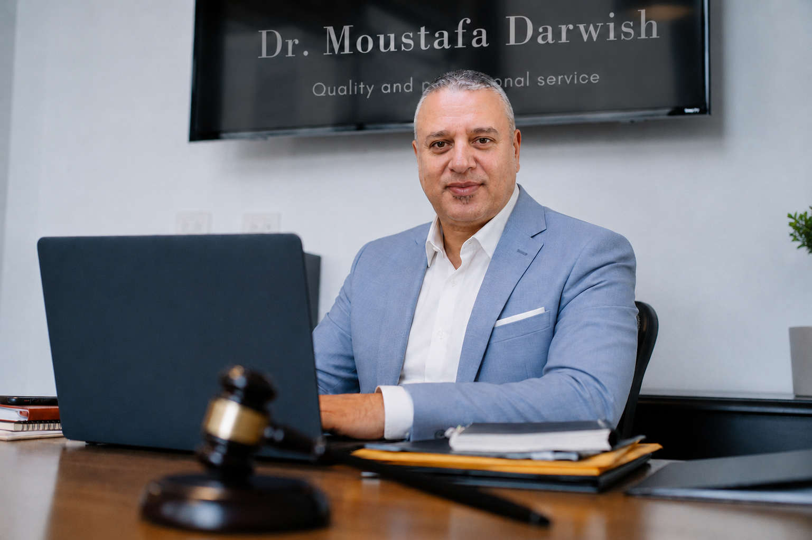
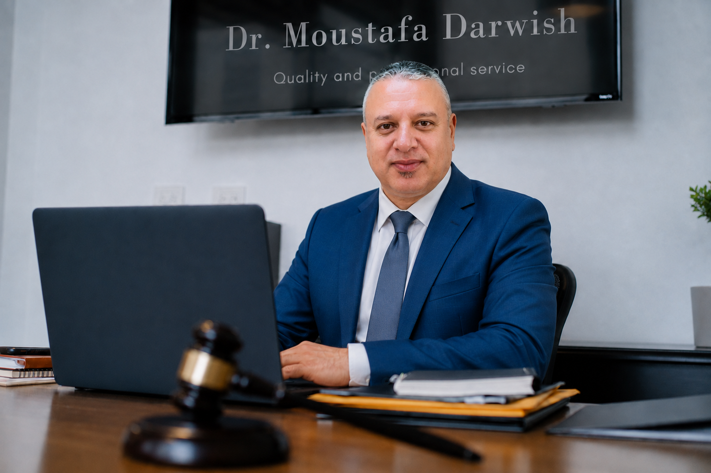
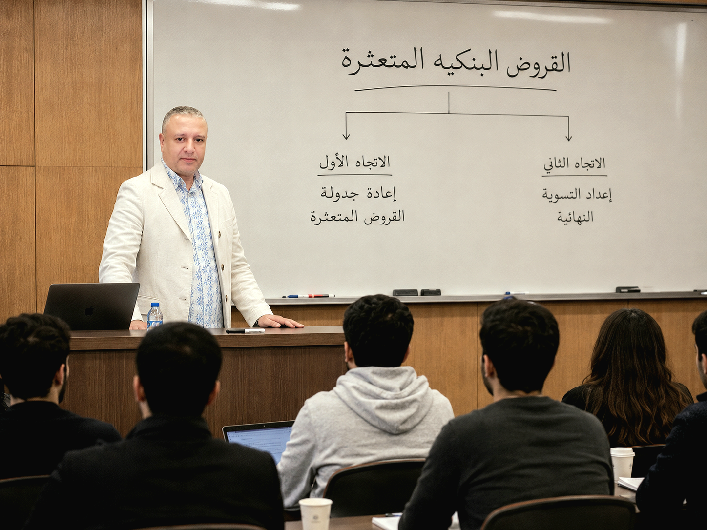
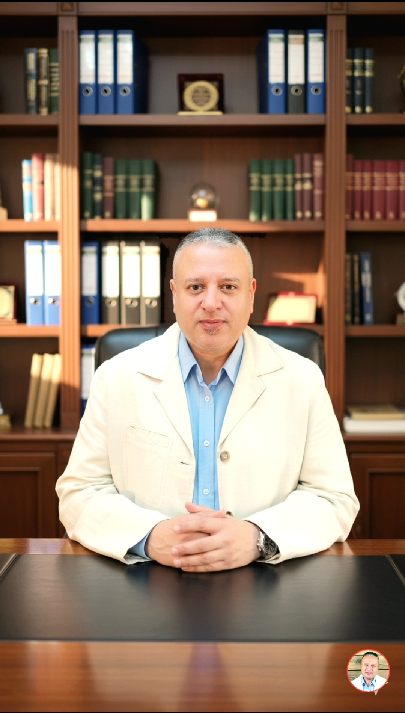

All About Me
My Business Gate

مستشار قانوني متخصص في قضايا البنوك
والتسويات البنكية
وإعادة جدولة الديون المتعثرة داخل مصر ودول الخليج العربي
دكتوراه في التنمية البشرية وتطوير الأعمال
محاضر معتمد من أكاديمية التدريب الدولية بالمملكة المتحدة

شهدت مهنة المحاماة خلال السنوات الأخيرة تطورًا كبيرًا بفضل الثورة الرقمية والتقدم التكنولوجي، فلم يعد دور المحامي يقتصر على الحضور إلى المحاكم أو إعداد المذكرات القانونية بالأساليب التقليدية. فقد أصبحت وسائل الاتصال الحديثة تتيح للمحامي التواصل مع موكليه من أي مكان في العالم، وتقديم الاستشارات القانونية عبر المنصات الإلكترونية والاجتماعات المرئية بكل سهولة وسرعة. كما ساهمت الأنظمة القضائية الرقمية في تسهيل رفع الدعاوى، وتبادل المستندات، ومتابعة إجراءات التقاضي إلكترونيًا، مما وفر الوقت والجهد لجميع الأطراف. وأصبح الذكاء الاصطناعي وقواعد البيانات القانونية أدوات مهمة تساعد المحامي على البحث وتحليل السوابق القضائية بدقة وكفاءة. كذلك انتشرت وسائل بديلة ومتطورة لحل المنازعات، مثل التحكيم والوساطة الإلكترونية، والتي أسهمت في إنهاء العديد من القضايا بعيدًا عن إجراءات التقاضي التقليدية. ولم تعد جودة عمل المحامي تقاس فقط بخبرته القانونية، بل أيضًا بقدرته على استخدام التكنولوجيا ومواكبة التطورات الرقمية. لذلك أصبح المحامي العصري يجمع بين المعرفة القانونية العميقة والمهارات التقنية الحديثة، ليقدم خدمات قانونية أكثر سرعة ودقة وكفاءة، بما يتوافق مع متطلبات العصر ويعزز وصول العدالة إلى الجميع.
تشكل القروض المتعثرة صداعاً مستمراً لدى كُلاً من البنك والعميل المتعثر في السداد للدرجة التي تصبح فيها تلك القروض عبأً حقيقياً على البنك الذي يرى هامش أرباحه يتم اقتطاع جزء منها يساوي قيمة القرض المتعثر كاملاً، وكذلك العميل الذي يجد نفسه محاصراً تحت وطأة هذا القرض وتضخم القيمة الحقيقية للقرض بسبب تراكم فوائد وغرامات التأخير في السداد، لذلك أصبح دور المحامي المتمرس في شئون المعاملات البنكية وأساليب معالجة الأمور بالشكل الصحيح للوصول إلى الحلول الواقعية بدون مغالاة، دوراً فعالاً يؤدي إلى الخروج من النفق المظلم ورفع الضغوط عن جميع الأطراف .. ونحن نمتلك خبرة تتجاوز العشرون عاماً في هذا المجال داخل مصر ودول الخليج العربي ويسعدنا أن نستكمل هذا النجاح معك شخصياً.
نسعى بكل أجتهاد من أجل الوصول إلى تسويه نهائية عادله تضمن لك إنهاء التزاماتك البنكيه بالشكل الذي يتوافق مع اقصى درجات العداله التي لا تؤدي .. إلى إرهاقك مادياً .. كما نساعدك في الوصول الي مرحلة جدولة القرض بالشكل الذي يتناسب مع مركزك المالي الحالي في ظل معطيات الظروف الإقتصاديه المتغيره سواء كانت تلك المديونية قائمه داخل أياً من البنوك المنتشره داخل جمهورية مصر العربية او حتى داخل البنوك القائمه في دولة الإمارات العربية و دول منطقة الخليج العربي.

نفتخر بتقديم الدعم التدريبي لموظفي القطاع المصرفي في إطار دبلومة البنوك المتخصصة بدعم من أكاديمية التدريب الدولية المعتمده من المملكة المتحدة etc.uk

بفضل الله اولا و اخيراً ثم بالإستعانه بالدراسات الأكاديمية و المهنيه في مجال القانون و إدارة الاعمال و تطوير المشاريع على ارض الواقع أستطعنا مساعدة عشرات المشاريع و تقديم الدعم و الإستشارات الناجزه التي ساهمت في تعديل المسار و تغيير الدفه و المسار من حافة الفشل و التوقف إلى بداية الإزدهار و تحقيق الأرباح و الغايه الأسمى وهي إستدامة النشاط .. نحن هنا نتفهم القلق الذي ينتابك عند بدء نشاط جديد أو تأخر تحقيق الأرباح المتوقعه و بسعدنا دائماً أن نكون إلى جوارك حتى نصل سويا إلى الاهداف التي بدأت من أجلها .